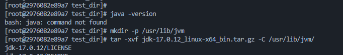
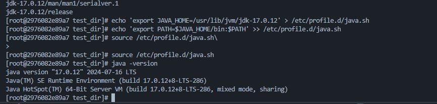

RHEL의 공식 이미지인 Universal Base Image (UBI)를 활용합니다.
version: "3.8"
services:
rhel-test:
image: registry.access.redhat.com/ubi8/ubi:latest
container_name: rhel-test-server
tty: true
volumes:
- .:/test_dir표준 JVM 경로에 JDK를 배치하여 관리 효율성을 높입니다.
# 1. JVM 디렉토리 생성
> mkdir -p /usr/lib/jvm
# 2. 지정 경로에 압축 해제
> tar -xvf jdk-17.0.12_linux-x64_bin.tar.gz -C /usr/lib/jvm/RHEL의 쉘 초기화 스크립트를 사용하여 전역 환경 변수를 자동화합니다.
# JAVA_HOME 및 PATH 등록
> echo "export JAVA_HOME=/usr/lib/jvm/jdk-17.0.12" > /etc/profile.d/java.sh
> echo "export PATH=\$JAVA_HOME/bin:\$PATH" >> /etc/profile.d/java.sh
# 즉시 적용
> source /etc/profile.d/java.shJava 엔진 로드 여부와 실제 환경 설정 상태를 확인합니다.
> java -version

© 2026 Gustav Lab Technical Engineering Team